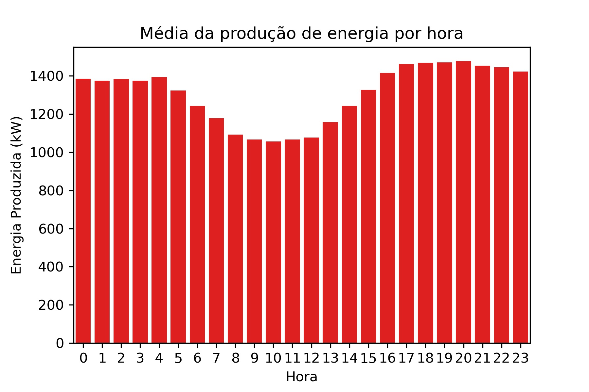
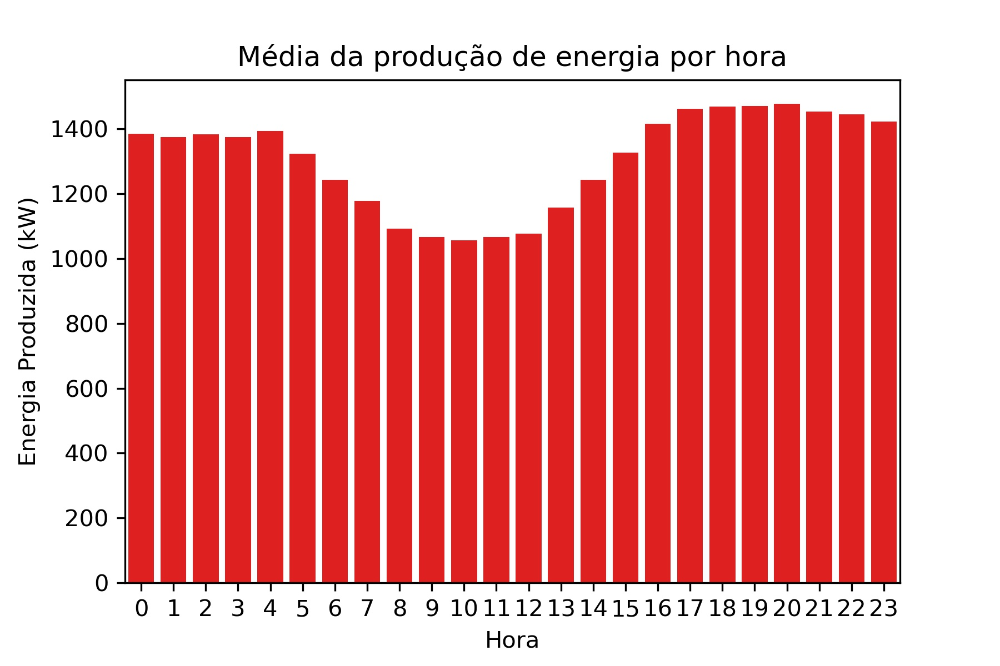
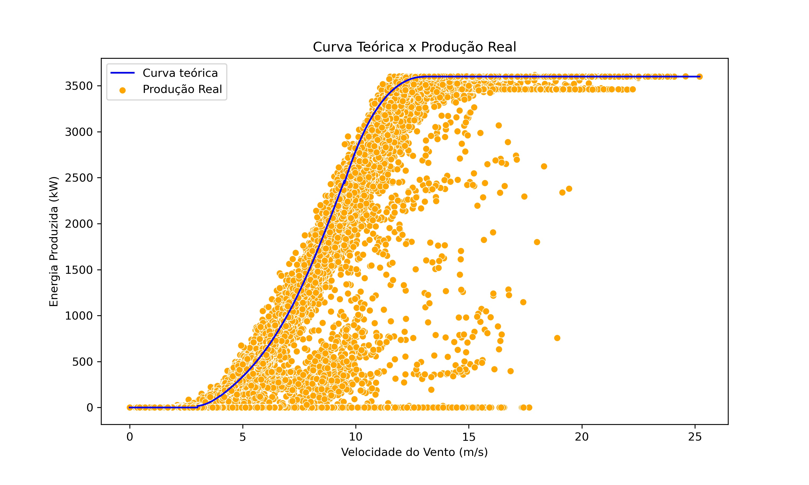
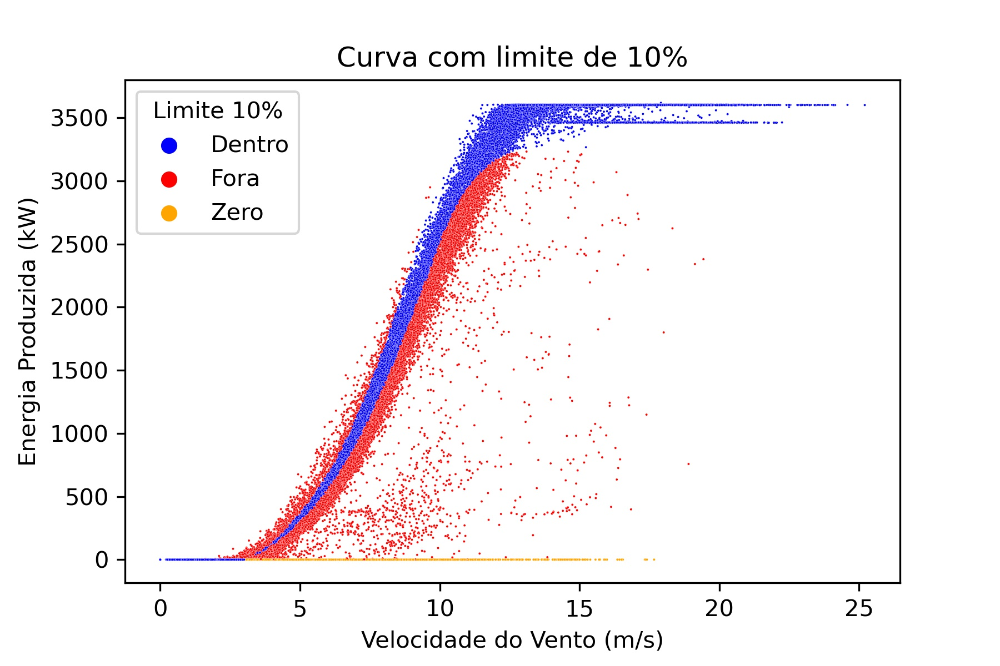
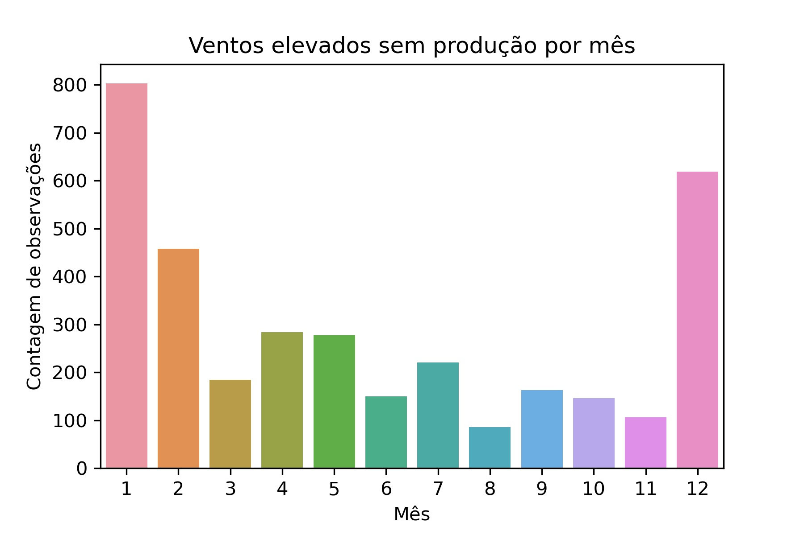
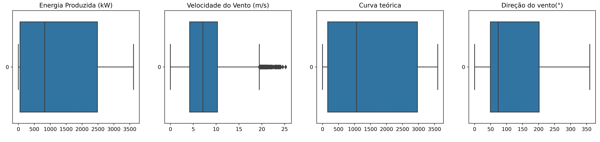

Os ventos ao nosso favor
Projeto de análise dos dados de uma turbina eólica e os fatores que influenciam na produção de energia


A base de dados possui 50.530 observações de uma turbina eólica e apresenta algumas características:
- Data/Hora: Observações a cada 10 minutos durante todo o ano de 2018;
- Energia Produzida: Energia gerada pela turbina;
- Velocidade do vento: Velocidade do vento lida na turbina, que é onde é produzida a energia;
- Curva teórica: Energia que seria produzida se todas as condições ideais fossem atingidas. Esse valor é fornecido pelo fabricante;
- Direção do Vento: A direção do vento na turbina (a turbina é rotacionada automaticamente).
Caso queira, pode encontrar o código desenvolvido no Notebook abaixo.
Fonte dos dados: https://www.kaggle.com/berkerisen/wind-turbine-scada-dataset
Considerações Iniciais
Em um mundo onde se consome cada vez mais energia, é necessária uma diversificação da matriz energética e uma transição das fontes fósseis para fontes renováveis. Dessa forma, a energia eólica torna-se uma grande aliada nesse processo, pois é uma fonte abundante e que não polui o meio ambiente. Entretanto, conta com a imprevisibilidade e incerteza da natureza.
O objetivo desta análise é tentar encontrar os principais fatores que influenciam na produção da energia e com isso fornecer informações úteis para otimizar o processo produtivo. Essas informações podem ser utilizadas desde a elaboração de um cronograma de manutenção que prejudique minimamente a produção de energia até a percepção de tendências e fatores regionais que possam influenciar na instalação de novas turbinas. Por fim, a base será preparada para ser utilizada em modelos de machine learning, os quais não são objeto deste estudo.
Tratamento dos dados
A base possui uma estrutura adequada então foram feitas apenas alterações de nomenclatura para facilitar a compreensão durante a manipulação dos dados e também foram inseridos valores de data e hora para facilitar algumas análises. Com relação aos valores, não foram encontrados valores nulos ou inconsistentes, no entanto alguns outliers foram localizados nos valores de velocidade do vento o que é compreensível tendo em vista que as condições climáticas não são completamente previsíveis.
Características da turbina e dos ventos
Foi constatado que a direção do vento com mais velocidade é entre 180 e 225° e entre 0 e 90°, permitindo que em futuras instalaçãoes seja observado com cuidado para aproveitar ao máximo as características da região. No gráfico abaixo estão pontuadas as observações representando a velocidade e a direção do vento.

Já com relação a velocidade do vento, o gráfico abaixo descreve que a partir dos 15 m/s a geração de energia passa a ficar próxima de uma constante que é seu máximo (3500 kW).
Com relação a produção de energia, foram elaborados os gráficos abaixo com o intuito de observar a produção em tempos diferentes (meses e horas).
Média geral de produção energética: 1307,68 kW
 

Os gráficos sugerem que os meses de menor produção energética são: Abril, Maio, Junho e Julho; já as horas com menor produção energética estão no intervalo entre 04hrs e 15 hrs. Com isso, é possível elaborar um cronograma de manutenção que seja dentro destes meses, mas caso seja necessário realizar nos meses de maior produção energética então que seja feita durante o dia já que é o período com ventos mais brandos.
Atendimento da potência para a curva teórica
A curva teórica é fornecida pelo fabricante da turbina a qual apresenta os valores de produção energética mediante condições ideais, porém a realidade não se adequa perfeitamente à curva teórica e, com isso, foram desenvolvidos dois gráficos com desvios de 5% e 10% da curva teórica.
Analisando a curva teórica e a energia produzida pela turbina foi observado que com 5% de tolerância a produção se adequou 37%, já com 10% de margem esse valor foi de 51%.
Observando as distribuições acima notou-se que existe um limiar de velocidade para iniciar a produção de energia que fica por volta de 3 m/s e 4 m/s.
No entanto, mesmo com esse limiar foi constatado que algumas observações apresentaram ventos fortes, porém sem produção de energia. Essas observações se concentram nos meses de Dezembro a Fevereiro que também são os meses que a produção de energia é mais alta. Logo, foram disperdiçados valores consideráveis de produção energética em virtude das paradas nesses períodos.
Essas observações podem representar manutenções, danos ou paradas técnicas, mas não temos informações sobre isso.
Preparação Machine Learning
Conforme o gráfico abaixo, foram constados alguns outliers que poderiam prejudicar um modelo de machine learning, então foi feita a correção dos mesmos para que a base pudesse ser aplicada em um futuro modelo.
Conclusões
Analisando esta base de dados foi possível percerber nuances que otimizariam a produção de energia desde a instalação da turbina até a escolha dos momentos para a manutenção. Além disso, foi possível notar que, mesmo com pequenos desvios, a produção de energia se adequa à curva teórica de produção de forma consistente. Por fim, ficou claro que paradas para manutenções em momentos específicos prejudicariam menos a produção de energia.
Assim encerro mais uma análise e agradeço você por ter lido até aqui. Um abraço!